The remaining chapters of this text are devoted to the operations of markets. In economics, a market refers to the collective activity of buyers and sellers for a particular product or service.
In this chapter we will focus on what might be considered the gold standard of a market: the perfect competition model. The operations of actual markets deviate from the perfect competition model, sometimes substantially. Still, this model serves as both a good initial framework for describing how a market functions and a reference base for evaluating any market.
The perfect competition model is built on five assumptions:An idealized market in which there are many buyers and sellers who are price takers, sellers are free to either enter or exit the market, the good or service being sold is the same for all sellers, and all buyers and sellers have perfect information.
The consequence of the preceding assumptions is that all exchanges in a perfectly competitive market will quickly converge to a single price. Since the good is viewed as being of identical quality and utility, regardless of the seller, and the buyers have perfect information about seller prices, if one seller is charging less than another seller, no buyer will purchase from the higher priced seller. As a result, all sellers that elect to remain in the market will quickly settle at charging the same price.
In Chapter 2 "Key Measures and Relationships" and Chapter 3 "Demand and Pricing", we examined the demand curves seen by a firm. In the case of the perfect competition model, since sellers are price takers and their presence in the market is of small consequence, the demand curve they see is a flat curve, such that they can produce and sell any quantity between zero and their production limit for the next period, but the price will remain constant (see Figure 6.1 "Flat Demand Curve as Seen by an Individual Seller in a Perfectly Competitive Market").
It must be noted that although each firm in the market perceives a flat demand curve, the demand curve representing the behavior of all buyers in the market need not be a flat line. Since some buyers will value the item more than others and even individual buyers will have decreasing utility for additional units of the item, the total market demand curve will generally take the shape of a downward sloping curve, such as Figure 6.2 "Demand Curve as Seen for All Sellers in a Market".
Figure 6.1 Flat Demand Curve as Seen by an Individual Seller in a Perfectly Competitive Market
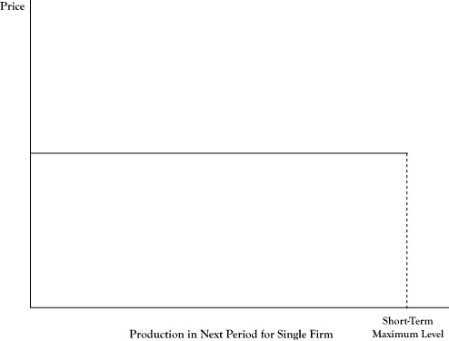Any amount the firm offers for sale during a production period (up to its maximum possible production level) will sell at the market price.
The downward sloping nature of the market demand curve in Figure 6.2 "Demand Curve as Seen for All Sellers in a Market" may seem to contradict the flat demand curve for a single firm depicted in Figure 6.1 "Flat Demand Curve as Seen by an Individual Seller in a Perfectly Competitive Market". This difference can be explained by the fact that any single seller is viewed as being a very small component of the market. Whether a single firm operated at its maximum possible level or dropped out entirely, the impact on the overall market price or total market quantity would be negligible.
Although all firms will be forced to charge the same price under perfect competition and firms have perfect information about the production technologies of other firms, firms may not be identical in the short run. Some may have lower costs or higher capacities. Consequently, not all firms will earn the same amount of profit.
Figure 6.2 Demand Curve as Seen for All Sellers in a Market

Although one seller sees a fixed price for its supply, if all sellers were to increase production, the maximum price that customers would pay to buy all the units offered would drop.
As described in the description of the shutdown rule in Chapter 2 "Key Measures and Relationships", some firms only operate at an economic profit because they have considerable sunk costs that are not considered in determining whether it is profitable to operate in the short run. Thus not only are there differences in profits among firms in the short run, but even if the market price were to remain the same, not all the firms would be able to justify remaining in the market when their fixed costs need to be replenished, unless they were able to adapt their production to match the more successful operators.
As described in Chapter 4 "Cost and Production", a long-run time frame for a producer is enough time for the producer to implement any changes to its processes. In the short run, there may be differences in size and production processes of the firms selling in the market. Some sellers may be able to make a healthy economic profit, whereas others may only barely make enough to justify continued operation and, as noted earlier, may not have sustainable operations although they may continue to operate for a while since a substantial portion of their short-run costs are sunk costs.
Due to the assumption of perfect information, all sellers know the production techniques of their competitors. As a result, any firm that intends to remain in the market will revise its operations to mimic the operations of the most successful firms in the market. In theory, in the long run all firms would either have the most cost-efficient operations or abandon the market.
However, when all firms use the same processes, the possibility for firms to continue to earn positive economic profits will disappear. Suppose all firms are earning a positive profit at the going market price. One firm will see the opportunity to drop its price a small amount, still be able to earn an economic profit, and with the freedom to redefine itself in the long run, no longer be constrained by short-run production limits. Of course, when one firm succeeds in gaining greater profit by cutting its prices, the other firms will have no choice but to follow or exit the market, since buyers in perfect competition will only be willing to purchase the good from the seller who has the lowest price. Since the price has been lowered, all firms will have a lower economic profit than they had collectively before they lowered the price.
Some firms may realize they can even drive the price lower, again take sales from their competitors, and increase economic profit. Once again, all firms will be required to follow their lead or drop out of the market because firms that do not drop the price again will lose all their customers. And once again, as all firms match the lowered price, the economic profits are diminished.
In theory, due to competition, homogeneous goods, and perfect information, firms will continue to match and undercut other firms on the price, until the price drops to the point where all remaining firms make an economic profit of zero. As we explained earlier, an economic profit of zero is sufficient to sustain operations, but the firm will no longer be earning an accounting profit beyond the opportunity costs of the resources employed in their ventures.
Another necessary development in the long run under perfect competition is that all firms will need to be large enough to reach minimum efficient scale. Recall from Chapter 4 "Cost and Production" that minimum efficient scale is the minimum production rate necessary to get the average cost per item as low as possible. Firms operating at minimum efficient scale could charge a price equal to that minimum average cost and still be viable. Smaller firms with higher average costs will not be able to compete because they will have losses if they charge those prices yet will lose customers to the large firms with lower prices if they do not match their prices. So, in the long run, firms that have operations smaller than minimum efficient scale will need to either grow to at least minimum efficient scale or leave the market.
The demand curve describes how either one consumer or a group of consumers would change the amount they would purchase if the price were to change. Producers may also adjust the amounts they sell if the market price changes.
Recall from Chapter 2 "Key Measures and Relationships" the principle that a firm should operate in the short run if they can achieve an economic profit; otherwise the firm should shut down in the short run. If the firm decides it is profitable to operate, another principle from Chapter 2 "Key Measures and Relationships" stated that the firm should increase production up to the level where marginal cost equals marginal revenue.
In the case of a flat demand curve, the marginal revenue to a firm is equal to the market price. Based on this principle, we can prescribe the best operating level for the firm in response to the market price as follows:
Figure 6.3 "Relationship of Average Cost Curve, Marginal Cost Curve, and Firm Supply Curve for a Single Seller in a Perfectly Competitive Market" shows a generic situation with average (economic) cost and marginal cost curves. Based on the preceding rule, a relationship between the market price and the optimal quantity supplied is the segment of the marginal cost curve that is above the shutdown price level and where the marginal cost curve is increasing, up to the point of maximum production. For prices higher than the marginal cost at maximum production, the firm would operate at maximum production.
Figure 6.3 Relationship of Average Cost Curve, Marginal Cost Curve, and Firm Supply Curve for a Single Seller in a Perfectly Competitive Market
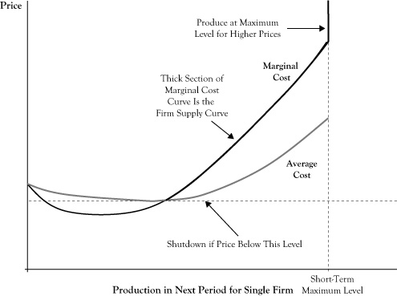This curve segment provides an analogue to the demand curve to describe the best response of sellers to market prices and is called the firm supply curveA segment of a firm's marginal cost curve that is above the shutdown price level and for which marginal cost is increasing up to the point of maximum production.. As is done with demand curves, the convention in economics is to place the quantity on the horizontal axis and price on the vertical axis. Note that although demand curves are typically downward sloping to reflect that consumers’ utility for a good diminishes with increased consumption, firm supply curves are generally upward sloping. The upward sloping character reflects that firms will be willing to increase production in response to a higher market price because the higher price may make additional production profitable. Due to differences in capacities and production technologies, seller firms may have different firm supply curves.
If we were to examine all firm supply curves to determine the total quantity that sellers would provide at any given price and determined the relationship between the total quantity provided and the market price, the result would be the market supply curveA curve that represents the relationship between total quantity provided in a market and the market price; a graphical illustration of the willingness of firms to increase production in response to improved profitability.. As with firm supply curves, market supply curves are generally upward sloping and reflect both the willingness of firms to push production higher in relation to improved profitability and the willingness of some firms to come out of a short-run shutdown when the price improves sufficiently.
The market demand curve indicates the maximum price that buyers will pay to purchase a given quantity of the market product. The market supply curve indicates the minimum price that suppliers would accept to be willing to provide a given supply of the market product. In order to have buyers and sellers agree on the quantity that would be provided and purchased, the price needs to be a right level.
The market equilibriumThe quantity and price at which there is concurrence between sellers and buyers; the point on a graph where the market demand curve and market supply curve intersect. is the quantity and associated price at which there is concurrence between sellers and buyers. If the market demand curve and market supply curve are displayed on the same graph, the market equilibrium occurs at the point where the two curves intersect (see Figure 6.4 "Market Equilibrium as the Coordinates for Quantity and Price Where the Market Demand Curve Crosses the Market Supply Curve").
Recall that the perfect competition model assumes all buyers and sellers in the market are price takers. This raises an interesting question: If all the actors in the market take the price as given condition, how does the market get to an equilibrium price?
One answer to this question was provided by the person who is often described as the first economist, Adam Smith. Adam Smith lived in the late 18th century, many years before a formal field of economics was recognized. In his own time, Smith was probably regarded as a philosopher. He wrote a treatise called The Wealth of Nations,See Smith (1776). in which he attempted to explain the prosperity that erupted in Europe as the result of expanded commercial trade and the industrial revolution.
Smith ascribed the mechanism that moves a market to equilibrium as a force he called the invisible handThe price adjustment process that moves a market to equilibrium when the market price is above or below the equilibrium price.. In effect, if the price is not at the equilibrium level, sellers will detect an imbalance between supply and demand and some will be motivated to test other prices. If existing market price is below the equilibrium price, the provided supply will be insufficient to meet the demand. Sensing this, some suppliers will try a slightly higher price and learn that, despite perfect information among buyers, some buyers will be willing to pay the higher price if an additional amount would be supplied. Other sellers will see that the higher price has enough demand and raise their prices as well. The new price may still be below equilibrium, so a few sellers will test a higher price again, and the process will repeat until there is no longer a perception of excess demand beyond the amount buyers want at the current price.
Figure 6.4 Market Equilibrium as the Coordinates for Quantity and Price Where the Market Demand Curve Crosses the Market Supply Curve
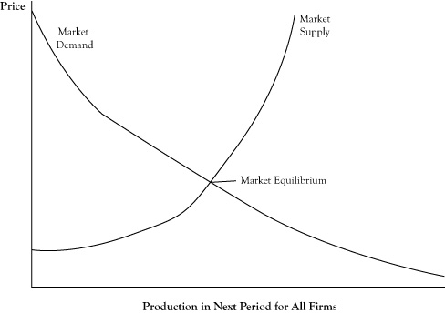If the market price is higher than the equilibrium price, sellers will initially respond with increased rates of production but will realize that buyers are not willing to purchase all the goods available. Some sellers will consider lowering the price slightly to make a sale of goods that would otherwise go unsold. Seeing this is successful in encouraging more demand, and due to buyers being able to shift their consumption to the lower priced sellers, all sellers will be forced to accept the lower price. As a result, some sellers will produce less based on the change in their firm supply curve and other sellers may shut down entirely, so the total market supply will contract. This process may be repeated until the price lowers to the level where the quantity supplied is in equilibrium with the quantity demanded.
In actual markets, equilibrium is probably more a target toward which prices and market quantity move rather than a state that is achieved. Further, the equilibrium itself is subject to change due to events that change the demand behavior of buyers and production economics of suppliers. Changes in climate, unexpected outages, and accidental events are examples of factors that can alter the market equilibrium. As a result, the market price and quantity is often in a constant state of flux, due to both usually being out of equilibrium and trying to reach an equilibrium that is itself a moving target.
In addition to the factors that cause fluctuations in the market equilibrium, some developments may lead to sustained changes in the market equilibrium. For example, if a new product becomes available that is a viable substitute for an existing product, there is likely to be either a persistent drop in the quantity consumed of the existing good or a reduction in the market price for the existing good.
The impact of these persistent changes can be viewed in the context of changes in the behavior of buyers or the operations of sellers that cause a shift in the demand curve or the supply curve, respectively. In the case of the new availability of a close substitute for an existing product, we would expect the demand curve to shift to the left, indicating that at any market price for the existing good, demand will be less than it was prior to introduction of the substitute. As another example, consider the supply curve for gasoline after an increase in the price of crude oil. Since the cost of producing a gallon of gasoline will increase, the marginal cost of gasoline will increase at any level of production and the result will be an upward shift in the supply curve.
It is often of interest to determine the impact of a changing factor on the market equilibrium. Will the equilibrium quantity increase or decrease? Will the equilibrium price increase or decrease? Will the shift in the equilibrium point be more of a change in price or a change in quantity? The examination of the impact of a change on the equilibrium point is known in economics as comparative staticsThe examination of the impact of a change on the equilibrium point..
In the case of a shifting demand curve, since the supply curve is generally upward sloping, a shift of the demand curve either upward or to the right will result in both a higher equilibrium price and equilibrium quantity. Likewise, a shift in the demand curve either downward or to the left will usually result in a lower equilibrium price and a lower equilibrium quantity. So in response to the introduction of a new substitute good where we would expect a leftward shift in the demand curve, both the equilibrium price and quantity for the existing good can be expected to decrease (see Figure 6.5 "Shift of Market Demand to the Left in Response to a New Substitute and Change in the Market Equilibrium").
Whether a shift in the demand curve results in a greater relative change in the equilibrium price or the equilibrium quantity depends on the shape of the supply curve. If the supply curve is fairly flat, or elastic, the change will be primarily in the equilibrium quantity (see Figure 6.6 "Impact of Elasticity of the Supply Curve on the Impact of a Shift in the Demand Curve"). An elastic supply curve means that a small change in price typically results in a greater response in the provided quantity. If the supply curve is fairly vertical, or inelastic, the change in equilibrium will be mostly seen as a price change (see Figure 6.7 "Impact of Elasticity of the Supply Curve on the Impact of a Shift in the Demand Curve").
Figure 6.5 Shift of Market Demand to the Left in Response to a New Substitute and Change in the Market Equilibrium
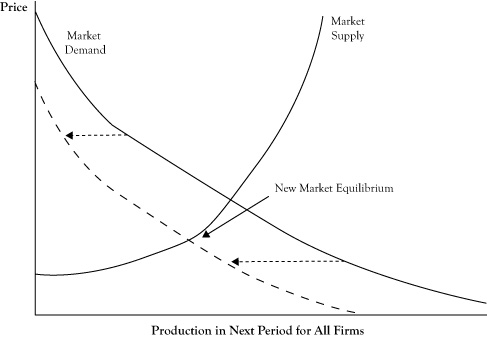Figure 6.6 Impact of Elasticity of the Supply Curve on the Impact of a Shift in the Demand Curve
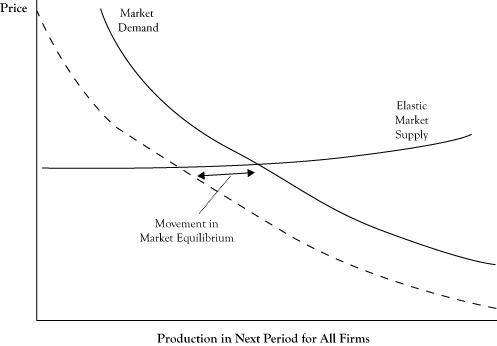The shift is generally in terms of the quantity when the supply curve is elastic.
Figure 6.7 Impact of Elasticity of the Supply Curve on the Impact of a Shift in the Demand Curve
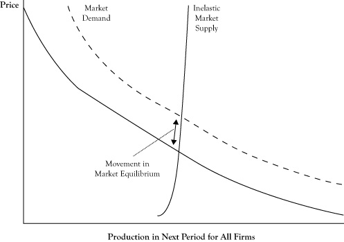The shift is generally in terms of the price when the supply curve is inelastic.
A shift in the supply curve has a different effect on the equilibrium. Because the demand curve is generally downward sloping, a shift in the supply curve either upward or to the left will result in a higher equilibrium price and a lower equilibrium quantity. However, a shift in the supply either downward or to the right will result in a lower equilibrium price and a higher equilibrium quantity. So for the example of the gasoline market where the supply curve shifts upward, we can expect prices to rise and the quantity sold to decrease (see Figure 6.8 "Shift of Market Supply Upward in Response to an Increase in the Price of Crude Oil and Change in the Market Equilibrium").
The shape of the demand curve dictates whether a shift in the supply curve will result in more change in the equilibrium price or the equilibrium quantity. With a demand curve that is flat, or elastic, a shift in supply curve will change the equilibrium quantity more than the price (see Figure 6.9 "Impact of Elasticity of the Demand Curve on the Impact of a Shift in the Supply Curve"). With a demand curve that is vertical, or inelastic, a shift in the supply curve will change the equilibrium price more than the equilibrium quantity (see Figure 6.10 "Impact of Elasticity of the Demand Curve on the Impact of a Shift in the Supply Curve").
The characterization of a demand curve as being elastic or inelastic corresponds to the measure of price elasticity that was discussed in Chapter 3 "Demand and Pricing". Recall from the discussion of short-run versus long-run demand that in the short run, customers are limited in their options by their consumption patterns and technologies. This is particularly true in the case of gasoline consumption. Consequently, short-run demand curves for gasoline tend to be very inelastic. As a result, if changing crude oil prices results in an upward shift in the supply curve for gasoline, we should expect the result to be a substantial increase in the price of gasoline and only a fairly modest decrease in the amount of gasoline consumed.
Figure 6.8 Shift of Market Supply Upward in Response to an Increase in the Price of Crude Oil and Change in the Market Equilibrium
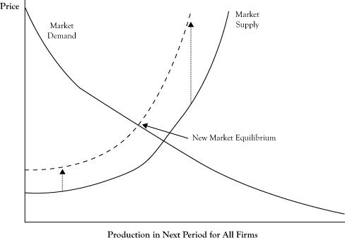Figure 6.9 Impact of Elasticity of the Demand Curve on the Impact of a Shift in the Supply Curve
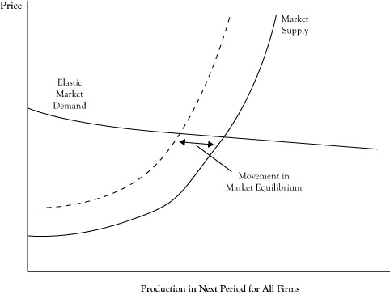The shift is generally in terms of the quantity when the demand curve is elastic.
Figure 6.10 Impact of Elasticity of the Demand Curve on the Impact of a Shift in the Supply Curve
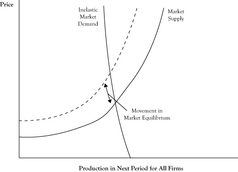The shift is generally in terms of the price when the demand curve is inelastic.
In a simple market under perfect competition, equilibrium occurs at a quantity and price where the marginal cost of attracting one more unit from one supplier is equal to the highest price that will attract the purchase of one more unit from a buyer. At the price charged at equilibrium, some buyers are getting a bargain of sorts because they would have been willing to purchase at least some units even if the price had been somewhat higher. The fact that market demand curves are downward sloping rather than perfectly flat reflects willingness of customers to make purchases at higher prices.
At least in theory, we could imagine taking all the units that would be purchased at the equilibrium price and using the location of each unit purchase on the demand curve to determine the maximum amount that the buyer would have been willing to pay to purchase that unit. The difference between what the customer would have paid to buy a unit and the lower equilibrium price he actually paid constitutes a kind of surplus that goes to the buyer. If we determined this surplus for each item purchased and accumulated the surplus, we would have a quantity called consumer surplusThe difference between what consumers would pay to buy a unit of a good or service and a lower equilibrium price that they actually pay; the area under the demand curve down to a horizontal line corresponding to the market equilibrium price.. Using a graph of a demand curve, we can view consumer surplus as the area under the demand curve down to the horizontal line corresponding to the price being charged, as shown in Figure 6.11 "Graph of Market Demand and Market Supply Curves Showing the Consumer Surplus and Producer Surplus When the Market Is in Perfect Competition Equilibrium".
On the supplier side, there is also a potential for a kind of surplus. Since market supply curves are usually upward sloping, there are some sellers who would have been willing to sell the product even if the price had been lower because the marginal cost of the item was below the market price, and in perfect competition, a producer will always sell another item if the price is at least as high as the marginal cost. If, as before, we assessed each item sold in terms of its marginal cost, calculated the difference between the price and the marginal cost, and then accumulated those differences, the sum would be a quantity called the producer surplusThe difference between the market price and sellers' marginal cost or the combined economic profit of all sellers in the short run; the area above the supply curve up to a horizontal line corresponding to the market equilibrium price..
Figure 6.11 Graph of Market Demand and Market Supply Curves Showing the Consumer Surplus and Producer Surplus When the Market Is in Perfect Competition Equilibrium
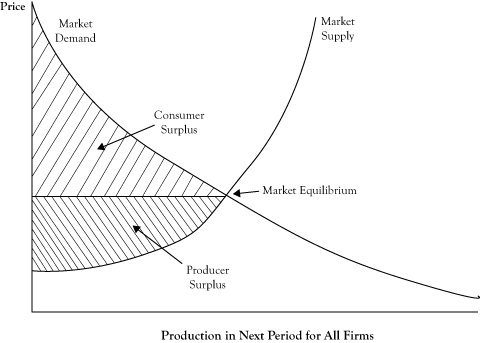The producer surplus reflects the combined economic profit of all sellers in the short run. For a graph of the supply curve, the producer surplus corresponds to the area above the supply curve up to the horizontal line at the market price, again as shown in Figure 6.11 "Graph of Market Demand and Market Supply Curves Showing the Consumer Surplus and Producer Surplus When the Market Is in Perfect Competition Equilibrium".
Consumer surplus will increase as the price gets lower (assuming sellers are willing to supply at the level on the demand curve) and producer surplus will increase as the prices gets higher (assuming buyers are willing to purchase the added amount as you move up the supply curve). If we asked the question, at what price would the sum of consumer surplus plus producer surplus would be greatest, the answer is at the equilibrium price, where the demand curve and supply curve cross.The sum of consumer surplus and producer surplus, which is maximized when a market is in equilibrium and is less than its maximum value when there is deadweight loss.
To support this claim, suppose sellers decided to increase the price above the equilibrium price. Since consumers would purchase fewer items, the quantity they could sell is dictated by the demand curve. The new producer surplus, as seen in Figure 6.12 "Change in Consumer Surplus and Producer Surplus When Sellers Increase Price Above the Equilibrium Price", might be higher than the producer surplus at the equilibrium price, but the consumer surplus would be decidedly lower. So any increase in producer surplus comes from what had been consumer surplus. However, there is a triangular area in Figure 6.12 "Change in Consumer Surplus and Producer Surplus When Sellers Increase Price Above the Equilibrium Price", between the supply and demand curve and to the right of the new quantity level, which represents former surplus that no longer goes to either consumers or producers. Economists call this lost surplus a deadweight lossFormer surplus that no longer goes to either consumers or producers..
If the price were lower than the equilibrium price, we encounter a situation where producer surplus decreases and at best only some of that decrease transfers to consumers. The rest of the lost producer surplus is again a deadweight loss, as seen in Figure 6.13 "Change in Consumer Surplus and Producer Surplus When Buyers Force the Price Below the Equilibrium Price".
The important point is that changing the price is worse than just a shift of surplus from consumers to producers, or vice versa. If the entire sum of consumer surplus and producer surplus could grow at a different price, it could be argued that the government could use a tax to take some of the excess received by one group and redistribute it to the other party so everyone was as well off or better off. Unfortunately, due to the deadweight loss, the gain to one of two parties will not offset the loss to the other party. So the equilibrium point is not only a price and quantity where we have agreement between the demand curve and supply curve, but also the point at which the greatest collective surplus is realized.
Figure 6.12 Change in Consumer Surplus and Producer Surplus When Sellers Increase Price Above the Equilibrium Price
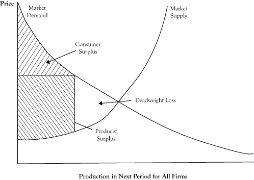Note the creation of a deadweight loss that was formerly part of either consumer surplus or producer surplus when the market operated at the perfect competition equilibrium.
Figure 6.13 Change in Consumer Surplus and Producer Surplus When Buyers Force the Price Below the Equilibrium Price
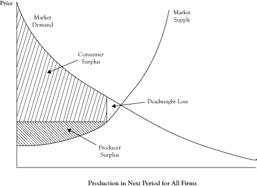Note the creation of a deadweight loss that was formerly part of either consumer surplus or producer surplus when the market operated at the perfect competition equilibrium.
Next we will consider some slight variations on the perfect competition model. The first is the oddly named monopolistic competitionA model of a market that is similar to perfect competition but in which the good sold may have slight variations from seller to seller. model,The monopolistic competition model is discussed in Samuelson and Marks (2010). which uses the same assumptions as the perfect competition model with one difference: The good sold may be heterogeneous. This means that while all sellers in the market sell a similar good that serves the same basic need of the consumer, some sellers can make slight variations in their version of the good sold in the market.
As an example, consider midsized passenger automobiles. Some firms may sell cars that are a different color or different shape, have different configurations of onboard electronics like GPS systems, and so on. Some firms may make the cars more reliable or built to last longer.
Variation in the product by sellers will only make sense if consumers are responsive to these differences and are willing to pay a slightly higher price for the variation they prefer. The reason that slightly higher prices will be necessary is that in order to support variation in product supplied, sellers may no longer be able to operate at the same minimum efficient scale that was possible when there was one version of the good that every seller produced in a manner that was indistinguishable from the good of other sellers.
The fact that firms may be able to charge a higher price may suggest that firms can now have sustained positive economic profits, particularly if they have a variation of the product that is preferred by a sizeable group of buyers. Unfortunately, even under monopolistic competition, firms can expect to do no better than a zero economic profit in the long run. The rationale for this is as follows: Suppose a firm has discovered a niche variation that is able to sustain a premium price and earn a positive economic profit. Another firm selling in the market or a new entrant in the market will be attracted to mimic the successful firm. Due to free entry and perfect information, the successful firm will not be able to stop the copycats. Once the copycats are selling a copy of this product variation, a process of price undercutting will commence as was described for perfect information, and prices will continue to drop until the price equals average cost and firms are earning only a zero economic profit.
The contestable market modelAn idealized market that is similar to perfect competition but in which there are a modest number of sellers, each of which represents a sizeable portion of overall sales.The key text on the contestable market model is by Baumol, Panzar, and Willig (1982). alters a different assumption of the perfect competition model: the existence of many sellers, each of which is a barely discernable portion of all sales in the market. When we consider most of the markets that exist in the real world, it is rare that this condition of the perfect competition model applies. Rather, most markets have sellers that represent a substantial presence and would noticeably change the market if any one of them would suddenly suspend production and sales. Also, in many industries, the minimum efficient scale is so large that any firm that manages to increase to that size will be necessarily contributing a substantial fraction of all market sales.
In the contestable market model, there can be a modest number of sellers, each of which represents a sizeable portion of overall market sales. However, the assumptions of free entry and exit and perfect information need to be retained and play a key role in the theory underlying this model. If buyers in the market know which seller has the lowest price and will promptly transfer their business to the lowest price seller, once again any firm trying to sell at a higher price will lose all its customers or will need to match the lowest price.
Of course, it may be argued that the selling firms, by virtue of their size and being of limited number, could all agree to keep prices above their average cost so they can sustain positive economic profits. However, here is where the assumption of free entry spoils the party. A new entrant could see the positive economic profits of the existing sellers, enter the market at a slightly lower price, and still earn an economic profit. Once it is clear that firms are unable to sustain a pact to maintain above cost prices, price competition will drive the price to where firms will get zero economic profits.
In the late 1970s, the U.S. government changed its policy on the passenger airline market from a tightly regulated market with few approved air carriers to a deregulated market open to new entrants. The belief that airlines could behave as a contestable market model was the basis for this change. Previously, the philosophy was that airline operations required too much capital to sustain more than a small number of companies, so it was better to limit the number of commercial passenger airlines and regulate them. The change in the 1970s was that consumers would benefit by allowing free entry and exit in the passenger air travel market. Initially, the change resulted in several new airlines and increases in the ranges of operations for existing airlines, as well as more flight options and lower airfares for consumers. After a time, however, some of the larger airlines were able to thwart free entry by dominating airport gates and controlling proprietary reservation systems, causing a departure from the contestable market model.A good account of airline industry deregulation is in chapter 9 of Brock (2009).
Markets that closely resemble the perfect competition model or its variants might be ideal from the standpoint of market customers and as a means of increasing social surplus. From the perspective of individual selling firms, highly competitive markets require that sellers carefully attend to cost and market conditions, while promising only modest returns on assets and invested capital for those firms that manage to survive. Despite the limited opportunity for profit in these markets over the long run, good and well-executed strategies can help firms in these markets be among the survivors and perhaps extend the period in which they can do better than sell products at average cost.
Michael Porter of Harvard University prepared a guidebook for firms to prevail in these competitive markets in his text Competitive Strategy.See Porter (1980). Basically, he advises that firms adopt an aggressive program to either keep their costs below the costs of other sellers (called a cost leadership strategyA response to a highly competitive market in which a firm adopts an aggressive program to keep its costs below the costs of other sellers.) or keep their products distinguishable from the competition (called a product differentiation strategyA response to a highly competitive market in which a firm adopts an aggressive program to keep its products distinguishable from the products of other firms.). The logic of either of these strategies can be viewed as trying to delay the development of the assumed conditions of perfect competition, so as to delay its long-run conclusions of zero economic profit.
The perfect competition model allows that some firms will do better than others in the short run by being able to produce a good or service at lower cost, due to having better cost management, production technologies, or economies of scale or scope. However, the model assumption of perfect information means that any firms with cost advantages will soon be discovered and mimicked. The cost leadership strategy prescribes that firms need to continually look for ways to continue to drive costs down, so that by the time the competition copies their technology and practices, they have already progressed to an even lower average cost. To succeed, these programs need to be ongoing, not just done once.
The monopolistic competition model allows for some differentiation in a product and the opportunity to charge a higher price because buyers are willing to pay a premium for this. However, any short-run opportunity for increased economic profit from selling a unique version of the product will dissipate as the competition takes notice and copies the successful variant. Porter’s product differentiation strategy is basically a steady pursuit of new product variants that will be prized by the consumer, with the intent of extending the opportunity for above-normal profits. However, as with the cost leadership strategy, to be successful, a firm must commit itself to continued product differentiation with up-front investment in development and market research.
Porter suggests that each of his two strategies may be geared toward participation in a broader market or limited to a particular segment of the market, which he calls a focus strategy. A focus strategy endeavors to take advantage of market segmentation. As we discussed in Chapter 3 "Demand and Pricing", the population of buyers is not usually homogeneous; some are willing to pay a higher price (less price elastic) and some are willing to purchase in greater volume. By focusing on a particular segment, a firm may be able to maintain an advantage over other sellers and again forestall the onset of the long-run limitations on seller profits. The goal of the focus strategy is to be able to serve this segment either at lower cost or with product variations that are valued by the customer segment. Of course, by focusing on just one or a subset of buyer segments, a firm loses the opportunity for profits in other segments, so depending on the product, the circumstances of the market, and the assets of the firm, a broader application of cost leadership or product differentiation may be better.
The potential for success using a cost leadership strategy or a product differentiation strategy might suggest that a firm can do even better by practicing both cost leadership and product differentiation. Porter advises against this, saying that firms that try to use both strategies risk being “stuck in the middle.” A firm that tries to be a cost leader will typically try to take advantage of scale economies that favor volume over product features and attract customers who are sensitive to price. Product differentiation seeks to attract the less price sensitive customer who is willing to pay more, but the firm may need to spend more to create a product that does this. Firms that try to provide a good or service that costs less than the competition and yet is seen as better than the competition are endeavoring to achieve two somewhat opposing objectives at the same time.